OTIUM is the practice of deliberate leisure. In the classical sense, otium is not escape from work but time when attention returns to memory, landscape, and thought — without a utilitarian deadline.
We shape routes for lingering, not for checklist tourism. The goal is presence in a place rather than consumption of sights.
OTIUM is not a tour operator. It is an invitation to walk, pause, and leave a route unfinished if the light on a façade deserves another minute.
City symbols
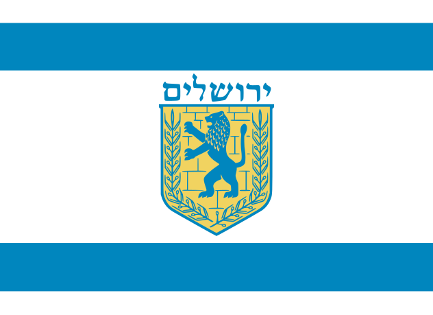
Jerusalem
Guide. Places in this edition: 22.
Church of All Nations (Gethsemane)
כנסיית כל העמים
Address: Mount of Olives, beside the Garden of Gethsemane | Style: Romanesque revival basilica; mosaics facing the Rock of Agony | Period: 1924 (Mendelssohn)
Pilgrimage basilica over the shelf of bedrock where tradition locates Christ’s agony; the interior’s violet windows keep the nave dim and devotional.
Facts and details
Often called the Basilica of the Agony alongside its formal name.
Olive trees in the adjoining garden are venerated though their age is debated by botanists.
History
A succession of shrines occupied the site before the present building, sponsored by several Catholic communities, framed Gethsemane for mass pilgrimage in the 20th century.
Significance
A key Christian station on the Mount of Olives—paired with panoramic viewpoints and Jewish cemetery terraces above the Kidron.
Church of St Anne
כנסיית סנטה אנה
Address: Muslim Quarter near Lions’ Gate (St Stephen’s Gate) | Style: Romanesque; remarkable acoustics in the triple-vaulted nave | Period: Crusader Romanesque (12th c.)
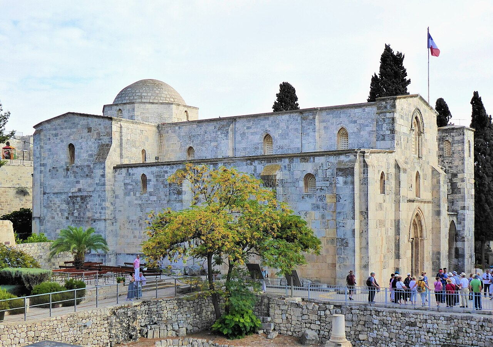
Best-preserved Crusader church in the city, traditionally marking the birthplace of Mary; its stone volumes reward slow listening when pilgrims sing.
Facts and details
The nearby Pools of Bethesda archaeological compound is usually visited on the same ticket.
Missionaries of Africa (White Fathers) administer the church.
History
Saladin converted the building to an Islamic school; restoration recovered the crusader fabric for Christian liturgy while respecting the precinct’s layered past.
Significance
For historians it is a textbook Romanesque survivor; for pilgrims it is Marian terrain at the edge of the Temple platform’s archaeology.
Church of St Peter in Gallicantu
כנסיית פטרוס בגלנטואנטו
Address: Eastern slope of Mount Zion | Style: 20th-c. basilica; excavated first-century quarries and cisterns | Period: 1931 church; ancient crypt below
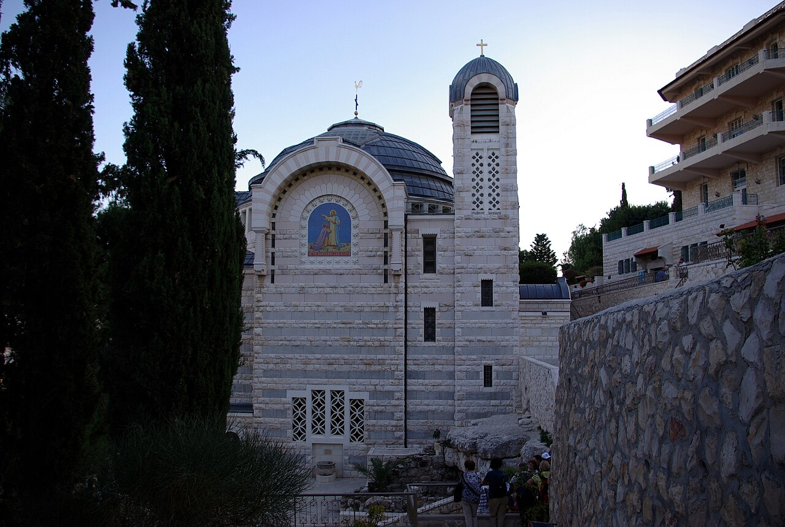
Roman Catholic complex commemorating Peter’s denial; steep staircases link upper church, chapels, and subterranean halls associated with imprisonment.
Facts and details
The crowing rooster motif appears in mosaics and signage (before the cock crow).
Scholars debate whether the crypt is the high priest’s prison; the architecture makes the debate tangible.
History
Byzantine and crusader chapels preceded the contemporary basilica; excavations exposed Herodian masonry cut into the hillside.
Significance
A southern counterweight to the Holy Sepulchre narrative—memory of fault, repentance, and dawn.
Church of the Holy Sepulchre
כנסיית הקבר
Address: Old City, Christian Quarter | Style: Basilica; Byzantine, Romanesque, Baroque layers | Period: 4th c. foundations; Crusader basilica 12th c.; successive rebuilds
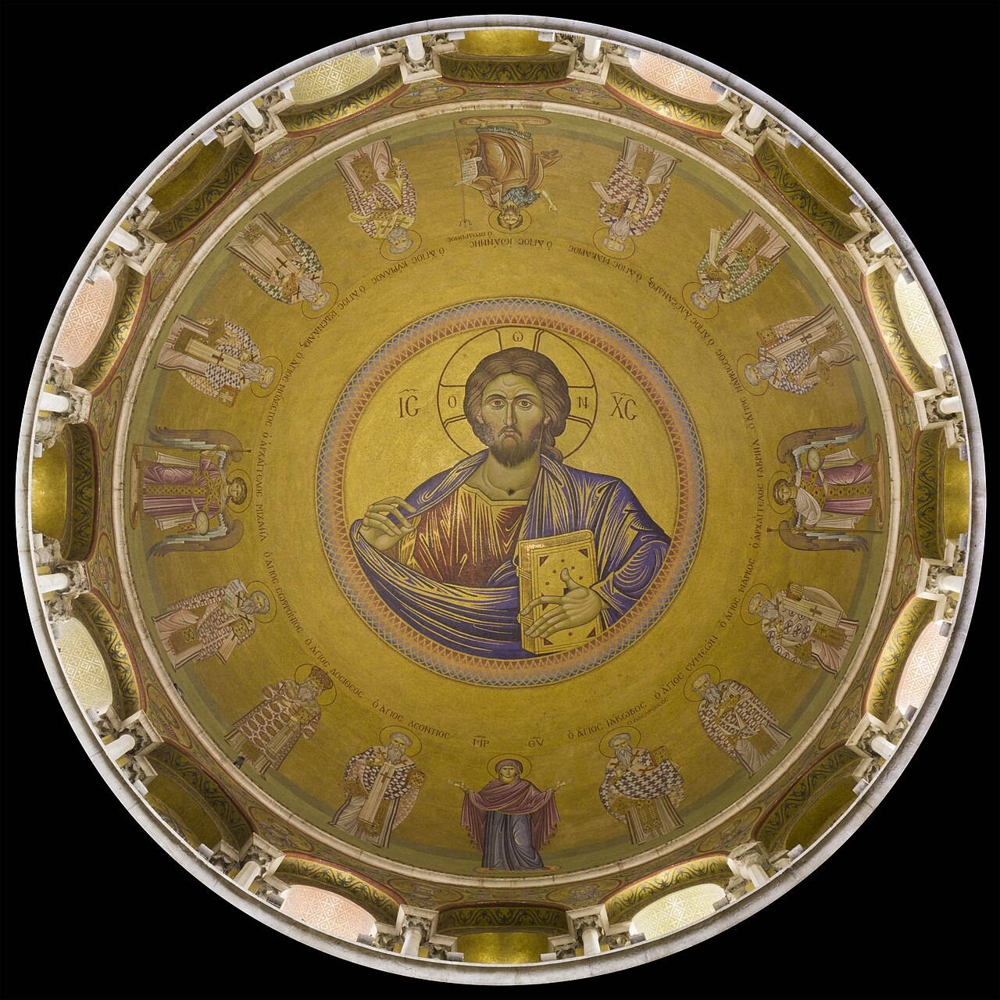
Major pilgrimage church enclosing sites tradition associates with the crucifixion and resurrection. Several Christian communities share custodial arrangements under the Status Quo.
Facts and details
The rotunda covers the edicule over the tomb; scheduling can affect access inside.
The Immovable Ladder on a façade has been a symbol of intercommunal restraint since the 18th century.
History
Constantine’s era complex was replaced and enlarged over centuries; the Crusaders left a lasting footprint on the Latin-rite spaces visitors see today.
Significance
For many Christians worldwide, this is the symbolic heart of Jerusalem’s sacred topography.
Dome of the Rock
כיפת הסלע
Address: Temple Mount / Haram al-Sharif (access rules vary) | Style: Umayyad octagon; Ottoman tile revetment (16th c.) | Period: Dedicated 691 CE (Umayyad); dome rebuilt 1022–23
Octagonal shrine with a gilt dome, built over the exposed rock at the summit of the Herodian platform. Non-Muslim visitor rules change; modest dress is expected when access is open.
Facts and details
Interior Quranic inscription bands are among the earliest monumental examples of Arabic script.
The drum and dome profile became an iconic silhouette in Islamic architecture.
History
The Umayyad caliphate raised the structure as a statement of legitimacy in Jerusalem; tile and marble campaigns later reframed its appearance for Ottoman taste.
Significance
The building anchors the visual and devotional identity of the Haram for Muslims and shapes skylines views across the Old City.
Dormition Abbey
מנזר הדורמיציון
Address: Mount Zion, Jerusalem | Style: Romanesque Revival abbey church | Period: 1900–1910
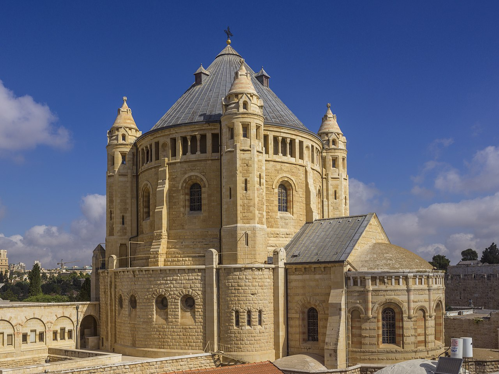
A solid stone abbey with a rounded dome near the Old City walls; a calm stop near Zion Gate.
Facts and details
Associated with traditions of Mary’s Dormition.
Interior includes crypt-level devotional spaces.
History
Built as a Benedictine abbey during late Ottoman and early modern Jerusalem transformations.
Significance
A major Mount Zion church stop connecting medieval and modern pilgrimage routes.
Ein Kerem
עין כרם
Address: Southwest Jerusalem hills | Style: Stone village lanes; hillside terraces; churches | Period: Ancient village core; modern neighborhood growth 20th c.
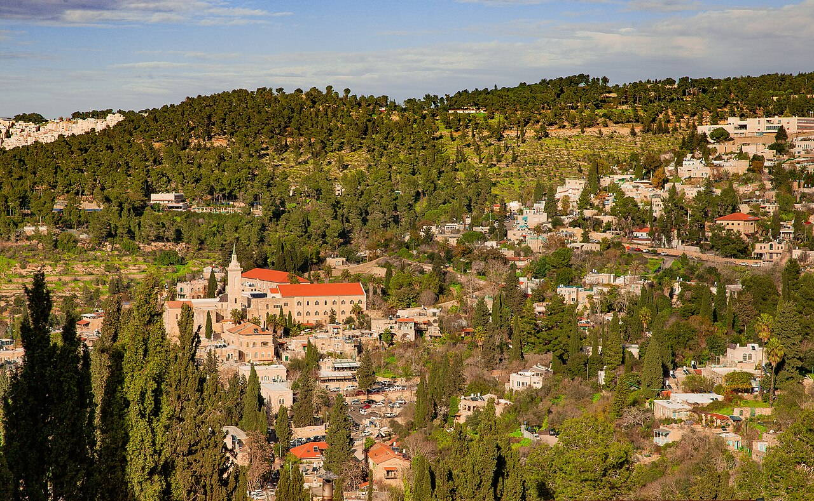
Hillside village-neighborhood with quiet lanes, gardens, and church complexes; a slower counterpoint to the Old City density.
Facts and details
Often visited for cafés and short scenic walks between viewpoints.
Spring and early morning light make the stone textures read well in photos.
History
Long a rural village outside Jerusalem’s walls, Ein Kerem became integrated into the city as western neighborhoods expanded.
Significance
A reset point: olive terraces, air, and scale after the Old City’s compressed streets.
Hurva Synagogue
בית הכנסת החורבה
Address: Jewish Quarter, Old City | Style: Neo-Byzantine revival with a prominent dome | Period: 1864 (Ohri); destroyed 1948; reconstructed 2010
Landmark synagogue on the Old City plateau, rebuilt after decades as a ruin; its dome reasserted the Jewish Quarter skyline.
Facts and details
The name “Hurva” (ruin) recalls an older 18th-century congregation’s bankruptcy.
The rebuilt interior revives the Ottoman-era monumental scheme.
History
Cycles of building, destruction, and memorial use trace the turbulent modern history of Jerusalem’s Jewish communities.
Significance
A focal point for worship and for reading the quarter’s layered archaeology and memory.
Israel Museum, Jerusalem
מוזיאון ישראל
Address: Derekh Ruppin 11 | Style: Modernist campus; Shrine of the Book nearby | Period: 1965 (expansions since)
Israel’s flagship encyclopedic museum: archaeology, fine arts, Judaica, and temporary exhibitions on a terraced campus beside the parliament district.
Facts and details
The campus integrates outdoor sculpture routes and stepped gardens.
The Dead Sea Scrolls are exhibited in the adjacent Shrine of the Book.
History
Founded as a national collection hub; successive wings widened its role in conservation and public education.
Significance
The standard half-day anchor for visitors who want context before—or after—walking the Old City.
Jaffa Gate
שער יפו
Address: Old City western entrance | Style: Ottoman fortification with later traffic alterations | Period: 1537 Ottoman; 1898 opening widened
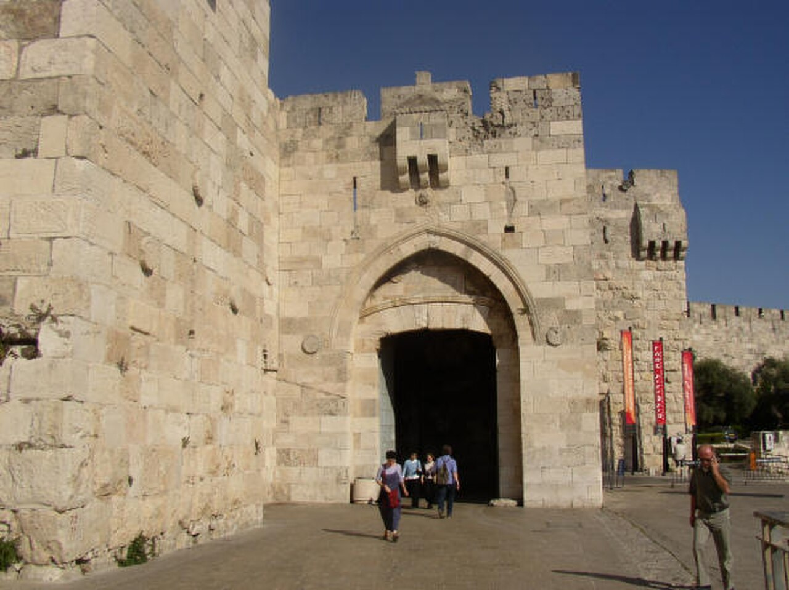
Principal gate from western Jerusalem into the Old City; adjoins the David Street market spine toward the Church of the Holy Sepulchre.
Facts and details
Opposite lies the Tower of David museum complex inside the citadel.
Street level drops toward Otto Plaza and Mamilla, changing sightlines at dusk.
History
Suleiman’s wall circuit defined today’s Old City gates; the breach for a carriage road belongs to the late Ottoman modernization era.
Significance
Most visitors’ first tactile encounter with the Ottoman enceinte and its bustle.
Jerusalem International YMCA
ימק״א ירושלים
Address: King David Street 26 | Style: Neo-Byzantine / Romanesque revival tower complex | Period: 1926–1933
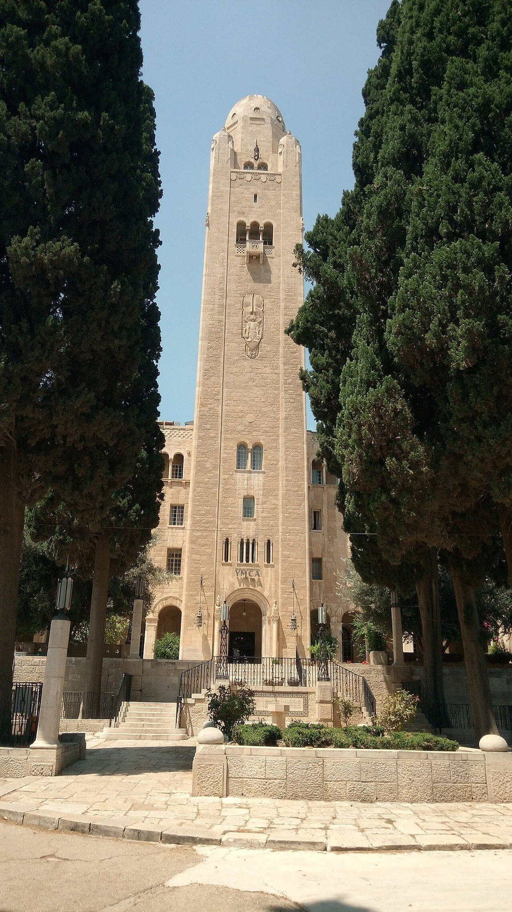
Landmark tower and arches beside the King David Hotel; concerts, sport facilities, and language programs occupy the campus.
Facts and details
The architect also shaped New Delhi’s central avenues—compare the muscular masonry vocabulary.
The vertical emphasis offers observation points over the western valley.
History
Built under the British Mandate as an interfaith civic gesture with monumental stone detailing.
Significance
A readable Mandate-era punctuation mark between old walls and modern western districts.
Knesset (Israeli parliament)
הכנסת
Address: Givat Ram, Jerusalem | Style: Modernist public architecture; restrained monumentality | Period: 1966 (main building; later annexes)
Unicameral parliament of Israel, sited near the Israel Museum and national archive cluster in Givat Ram.
Facts and details
Tours require advance booking and ID checks.
Artworks donated to the plenary include tapestries after Chagall.
History
Jerusalem became the legislative seat after 1966; nearby institutions formed a deliberate civic-cultural precinct.
Significance
The working chamber where Israeli law is debated—paired in the same visit with the museum campus.
Lutheran Church of the Redeemer
כנסיית הגואל
Address: Muristan, Christian Quarter | Style: Neo-Romanesque; tall bell tower over the souk grid | Period: Consecrated 1898 (Kaiser Wilhelm visit)
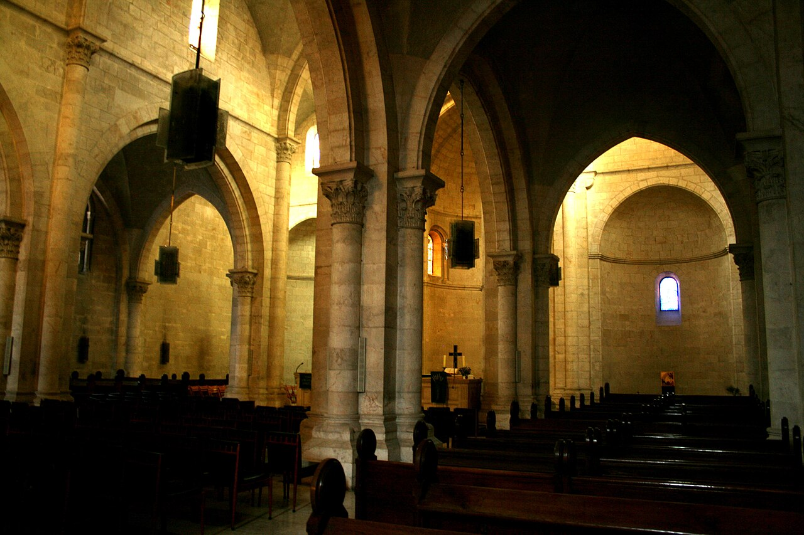
Landmark of the Evangelical Church in Jerusalem—its tower climb reveals domes and minarets in compass order; the nave reflects late Victorian Protestant taste in the Old City.
Facts and details
Combined tickets sometimes cover tower access and adjacent archaeological displays.
The Muristan courtyards around it mix cafes, Orthodox choirs, and souvenir lanes.
History
Erected on crusader-era ruins granted after diplomatic negotiations; it signaled Protestant permanence beside older Catholic and Orthodox jurisdictions.
Significance
For Lutheran and wider Protestant visitors it is the ceremonial center; for any walker it is the vertical exclamation point in the Christian quarter’s roof sea.
Mahane Yehuda Market
שוק מחנה יהודה
Address: Between Jaffa and Agrippas streets, Nachlaot | Style: Market lanes; metal canopies; street-art façades | Period: Late Ottoman stalls; roofed phases 20th–21st c.
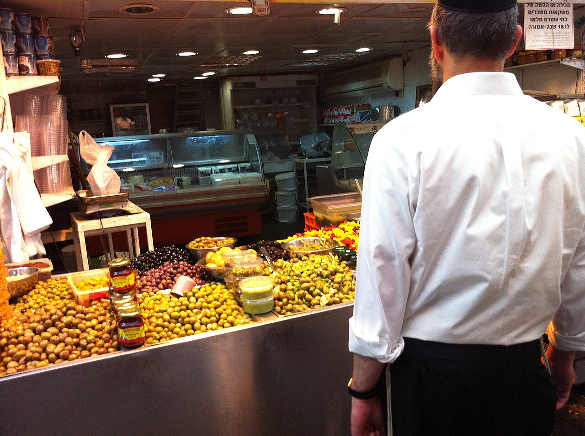
Jerusalem’s busiest produce and prepared-food market by day; bars and live music crowd the lanes on Thursday nights.
Facts and details
Ethiopian spice mixes share stalls with Yemenite pastries and Balkan börek.
Graffiti tours highlight portraits of local musicians and rabbis.
History
Named for a late-19th-century courtyard neighborhood; the market grew along the new city’s tram and bus axes.
Significance
The most direct taste of contemporary Jerusalem outside the walls—loud, aromatic, and crowded.
Restored mill overlooking the Hinnom Valley; symbol of the first Jewish neighborhood outside the Old City walls.
Facts and details
Grinding stopped when imported flour undercut local production.
The ridge walk links to photography balconies toward the Old City walls.
History
Financed with Montefiore’s philanthropy as part of Mishkenot Sha’ananim’s settlement experiment.
Significance
A readable 19th-century hinge between walled Jerusalem and expanding western neighborhoods.
Mount of Olives panorama
נוף מהר הזיתים
Address: Mount of Olives ridge (multiple overlooks) | Style: Natural ridge; scattered chapels and cemeteries | Period: From antiquity (burials, chapels); modern roads 20th c.
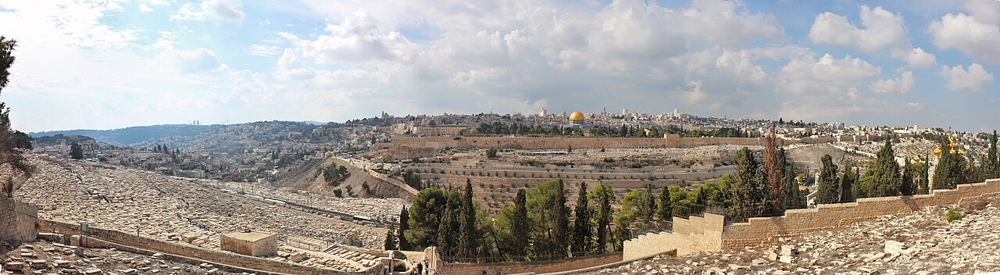
Classic eastward view across the Kidron Valley: Jewish cemetery tiers, mosque domes, and the golden Dome of the Rock punctuating the skyline.
Facts and details
Sunrise and late afternoon change shadow depth on the Temple Mount platform.
Christian sites on the slope include Dominus Flevati and the Garden of Gethsemane.
History
The ridge has served burial, pilgrimage, and defensive sighting for millennia; modern roads reshape pedestrian approaches.
Significance
The canonical postcard perspective that shows how tightly Old Jerusalem’s sacred focal points stack together.
Old City Ramparts Walk
טיילת החומות
Address: Old City walls (entry points vary by season) | Style: Ottoman fortifications; crenellations and towers | Period: 1530s (Ottoman walls); walkway access modern
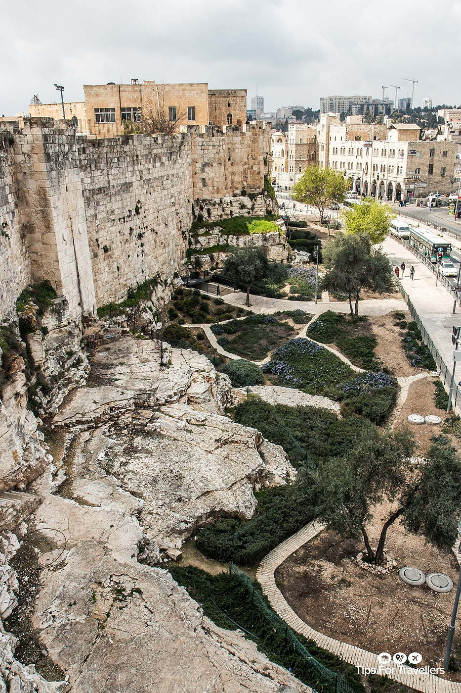
Walkable sections atop the Ottoman walls that stitch together skyline views: domes, courtyards, minarets, and the city’s layered roofscape.
Facts and details
The northern and southern sections are usually ticketed separately.
Bring water: sun exposure is strong and shade is scarce on the parapets.
History
Suleiman’s wall circuit formalized the perimeter of today’s Old City; the ramparts later became a curated viewpoint route for visitors.
Significance
One of the few ways to read Jerusalem’s geometry from above—without leaving the walls.
Shrine of the Book
היכל הספר
Address: Israel Museum campus | Style: Modernist; whitewashed dome over a vault | Period: 1959–1965
Museum pavilion housing the Dead Sea Scrolls and related manuscript culture; the lid recalls the jars found at Qumran.
Facts and details
The white dome contrasts with a dark basalt wall evoking desert geology.
Rotating exhibits complement the scroll fragments on display.
History
Built as the scrolls’ permanent home after Jordanian and Israeli custody transitions; conservation labs adjoin the galleries.
Significance
Essential for understanding Second Temple-era Judaism before walking Herodian remains in the Old City.
Tower of David (Jerusalem Citadel)
מגדל דוד
Address: Jaffa Gate, Old City | Style: Fortress complex; minaret from Mamluk/Ottoman phases | Period: Herodian, Crusader, Mamluk, Ottoman layers; museum 20th c.
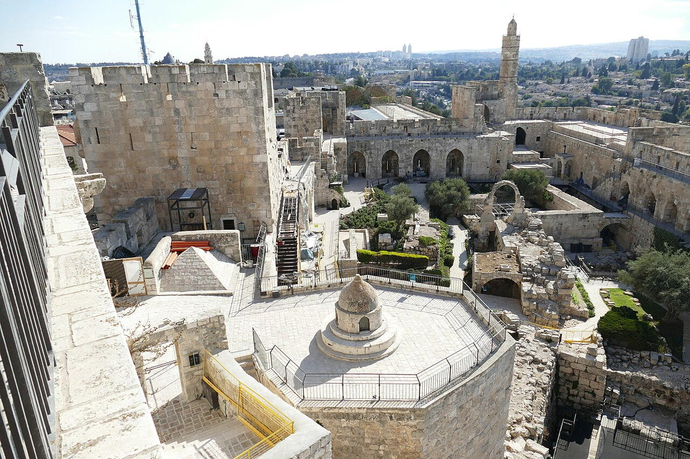
Citadel beside Jaffa Gate with archaeological finds and evening light shows projected on the ramparts.
Facts and details
The name “Tower of David” is traditional rather than strictly historical for the minaret.
Ramparts walks reveal how Ottoman engineers tied the fort to the wall line.
History
Successive empires refortified the spur controlling the western approach; the modern museum interprets those strata.
Significance
The best single introduction to Jerusalem’s stratigraphy without descending into tunnels—yet.
Via Dolorosa
ויה דולורוזה
Address: Old City, Muslim & Christian quarters | Style: Covered lanes, stone arches, street chapels | Period: Route tradition formalized medieval–modern
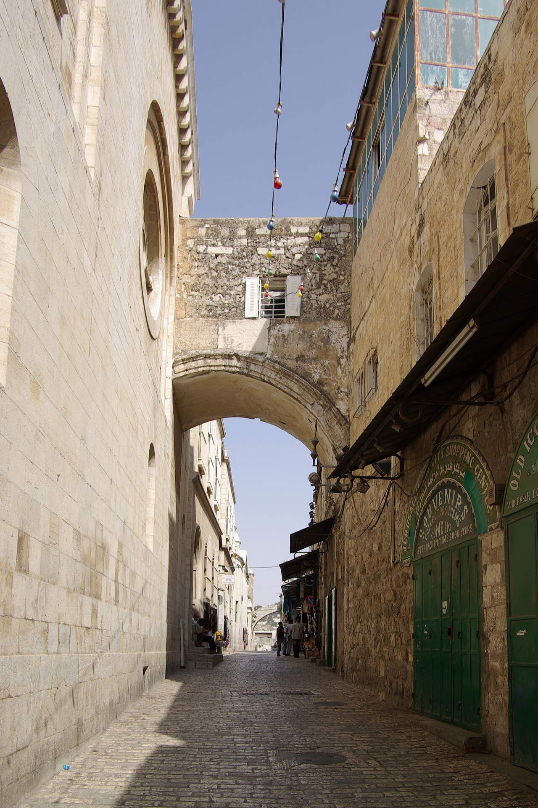
Processional path associated with the Stations of the Cross, threading through markets and courtyards toward the Holy Sepulchre.
Facts and details
Stations are marked by plaques and small chapels; crowds peak on Fridays.
Sections double as active shopping streets—move slowly and yield space.
History
Pilgrimage itineraries shifted over centuries; the modern station sequence reflects late medieval and later devotional mapping.
Significance
A living overlap of worship and everyday commerce—Jerusalem’s sacred narratives embedded in ordinary streets.
Western Wall
הכותל המערבי
Address: Western Wall Plaza, Old City | Style: Herodian ashlar masonry | Period: Herodian retaining wall (1st c. BCE); plaza modern
Open-air prayer place along the Herodian temenos; men’s and women’s sections follow Orthodox practice; modest dress is expected.
Facts and details
The visible courses are only part of the retaining system; tunnels continue north along the platform.
Notes left in the cracks are collected periodically for respectful burial.
History
The wall survived as a ruin focal point through Islamic rule; today’s plaza reflects 20th-century urban decisions after 1967.
Significance
For many Jews, the chief tangible link to the destroyed Temple esplanade above.
Yad Vashem
יד ושם
Address: Mount Herzl, Har HaZikaron | Style: Contemporary memorial architecture; prism-like museum | Period: 1953 (institution); Holocaust History Museum 2005
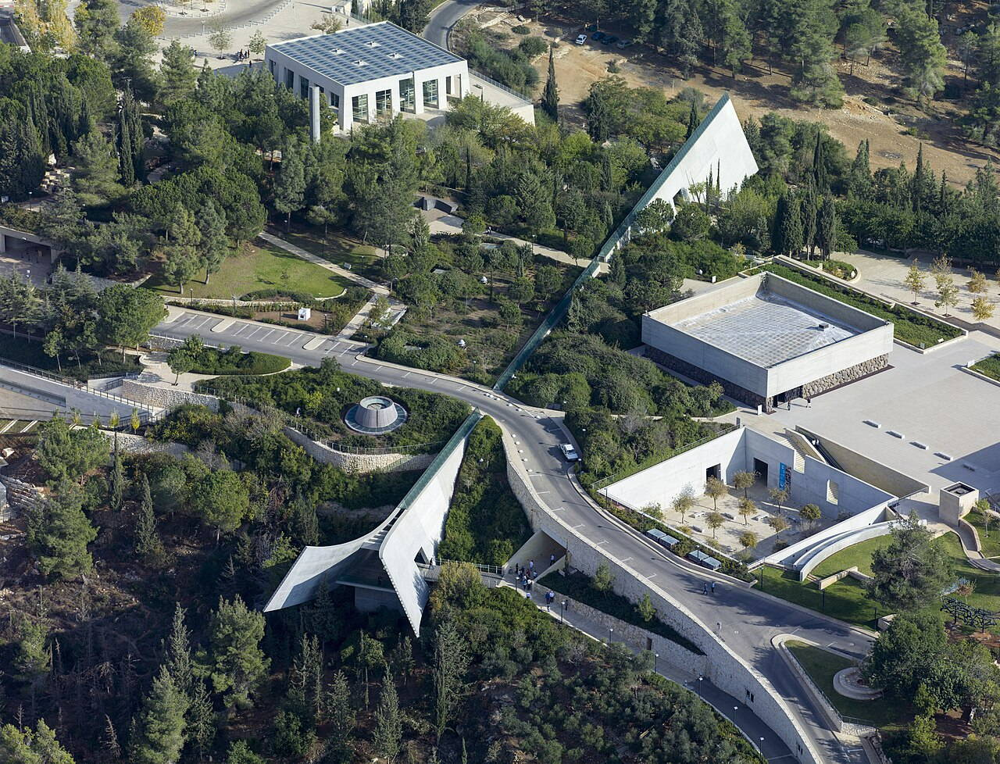
Israel’s official Holocaust remembrance center: museum galleries, memorials, archives, and the Hall of Names on a pine-covered ridge.
Facts and details
Plan time: the museum narrative is long and emotionally heavy—take breaks.
Photography rules vary by hall; check signage and be respectful.
History
Established by law as a national institution; the 2005 museum reframed the core exhibition as a chronological path through the ridge.
Significance
A necessary stop for historical grounding and remembrance in modern Jerusalem.